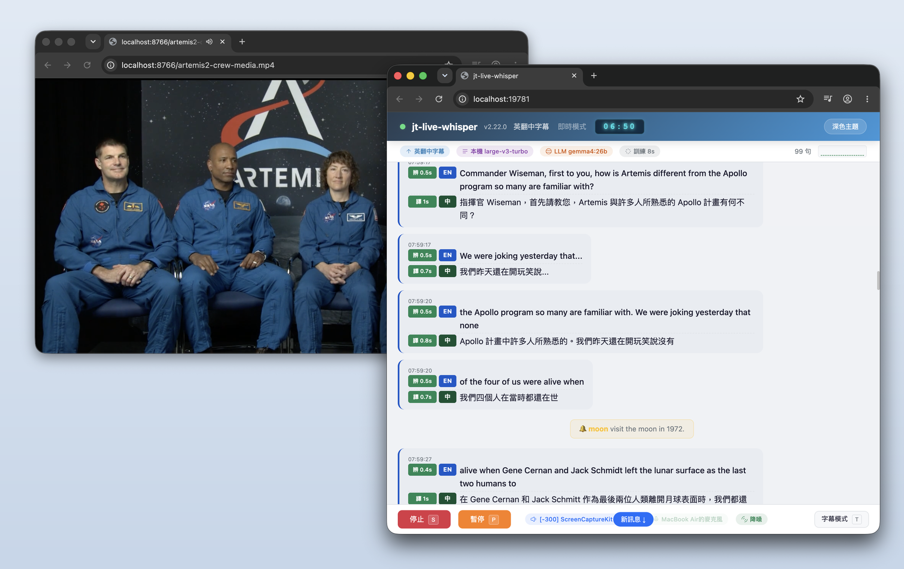
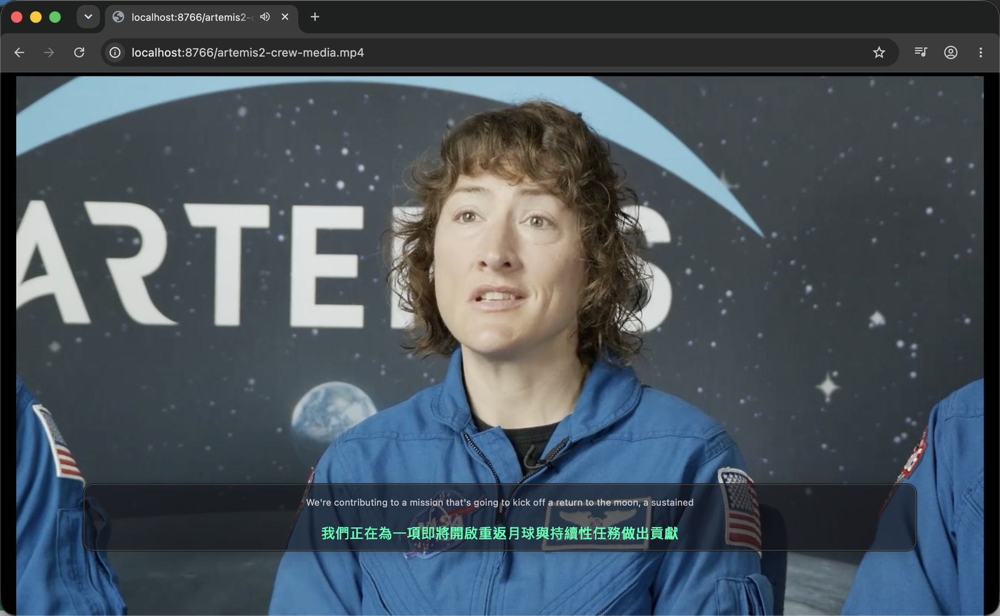

進階特色Advanced features
把即時翻譯變得更實用的那些細節。The details that make live translation genuinely useful.
同時轉錄麥克風Transcribe your mic
所有即時模式加上 --mic 即可同時轉錄自己的麥克風語音，雙向模式自動啟用。Add --mic to any live mode to also transcribe your own voice; auto-on for bidirectional.
會議主題感知翻譯Topic-aware translation
可指定會議主題（如「ZFS 儲存管理」），讓 LLM 依領域上下文精準翻譯專業術語。Set a meeting topic (e.g. "ZFS storage") so the LLM translates domain jargon accurately.
自動偵測 LLM 伺服器Auto-detect LLM server
支援 Ollama、LM Studio、Jan.ai、vLLM、LocalAI、llama.cpp、LiteLLM，自動辨識伺服器類型。Detects Ollama, LM Studio, Jan.ai, vLLM, LocalAI, llama.cpp and LiteLLM automatically.
互動式選單 + CLIInteractive menu + CLI
新手友善的選單介面，進階用戶可用命令列參數直接啟動；選單最後顯示等效 CLI 指令。A beginner-friendly menu, or launch directly via CLI — the menu prints the equivalent command.
WebUI 瀏覽器介面Web UI
--webui 在瀏覽器操作所有功能，支援即時字幕、離線處理、講者辨識、摘要，手機 / 平板也可使用。--webui drives everything in the browser — live, offline, diarization, summaries — phone/tablet friendly.
背景降噪Background denoise
即時模式可加 --denoise 啟用背景降噪，提升嘈雜環境的辨識品質。Add --denoise in live mode to clean up noisy environments before recognition.
GPU 伺服器版本檢查GPU server version check
伺服器上的辨識服務是獨立的程式，不會跟著本機升級。連上時自動比對版本，不一致會提示但不中斷作業。另有選填的自動更新（預設關閉）。The server's recognition service is a separate program that doesn't upgrade with the client. Versions are compared on connect — a mismatch warns you without interrupting the job. Optional auto-update is off by default.
關鍵字即時通知Keyword alerts
設定關鍵字，即時辨識出現時自動發出通知，可用於追蹤會議重點，或線上課程摸魚時讓系統在「請實作」「這個會考」時自動提醒。支援全螢幕警示特效、瀏覽器推播、音效提示（警示 / 柔和可選）、懸浮字幕閃爍，同一關鍵字冷卻機制避免重複通知。Set keywords and get notified the moment they're spoken — track key topics, or get pinged on "let's implement this" / "this is on the exam". Full-screen effects, browser push, sound (alert / soft), overlay flashing, and a per-keyword cooldown.

懸浮字幕Overlay subtitles
桌面半透明字幕覆蓋視窗（PyQt6），可疊加於任何應用程式上方。字體依視窗大小自動縮放、可拖曳移動與調整大小、滑鼠穿透模式、字幕切換淡入淡出動畫，單語 / 雙語自動切換高度。（感謝 OSSLab 熊大提供建議）A translucent desktop overlay (PyQt6) over any app — auto-scaling text, drag & resize, click-through, fade animations and auto height for mono/bilingual lines.

讓別的系統把語音變成可引用的逐字稿Let other systems turn speech into citable transcripts
jt-live-whisper 可以當成語音處理的後端：別的系統把錄音丟進來，拿回帶時間、帶發言者、校正過的逐字稿，再拿去做自己的事——例如產生會議摘要、決議與待辦，而每一條都指得回「誰在第幾分鐘說的」。辨識、講者分離與校正都在你自己的機器上跑，錄音與逐字稿不會離開內網。jt-live-whisper can act as a speech backend: another system submits a recording and gets back a timed, speaker-tagged, corrected transcript to build on — meeting summaries, decisions and action items, each traceable to who said it and when. Recognition, diarization and correction all run on your own hardware; nothing leaves your network.
| 拿到什麼What you get | 用途Why it matters |
|---|---|
| 原始辨識（每段含開始 / 結束時間、語言、信心值）Raw ASR — per-segment start/end time, language, confidence | 時間軸不會變，用來當「指回原音」的錨點A stable anchor back to the original audio |
| 校正後文字（含「這段有沒有被改過」）Corrected text — with an "edited" flag per segment | 簡繁、標點、專有名詞修對；改動幅度異常時自動保留原文Fixes script, punctuation and proper nouns; abnormal edits are rejected and the original kept |
| 發言者對應（S1、S2… 代號）Speaker mapping — S1, S2 … labels | 把每一句掛到人身上，姓名由你那邊對應Attribute every line to a person; you supply the real names |
為什麼分三層而不是一份合併好的結果：校正後的文字會變（換校正等級、更新詞彙庫重跑），而原始辨識的段號與時間不會變。把引用綁在段號上，重跑校正之後已經產生的決議與待辦仍然指得回同一段原音——時間若複製到校正層去，就會多一份可能不一致的資料。Why three layers instead of one merged result: corrected text changes (different correction level, updated glossary, re-runs) while the raw segment numbers and timings do not. Bind citations to the segment number and your decisions survive a re-correction — copying timings into the corrected layer would create a second source of truth that can drift.
實測（GPU 伺服器、28.3 分鐘的真實會議）：辨識 37 秒、講者分離 2 秒、校正 67 秒，總共 1 分 52 秒跑完，約為即時的 15 倍速。送件當下就開始拉檔，輪到處理時音訊已經在本機（預抓耗時 0 毫秒）。Measured on a real 28.3-minute meeting with a GPU server: 37 s recognition, 2 s diarization, 67 s correction — 1 min 52 s end to end, about 15× faster than real time. Audio is pre-fetched at submission, so the fetch stage costs 0 ms.
已上線的整合：Jason Tools 文件工具箱In production: Jason Tools Document Toolkit
Jason Tools 文件工具箱已經接上 jt-live-whisper。使用者在工具箱裡上傳一段會議錄音，整個流程是這樣走的：Jason Tools Document Toolkit is already wired to jt-live-whisper. A user uploads a meeting recording there, and this is what happens:
| 做什麼Step | 誰做Where | |
|---|---|---|
| 1 | 在「會議錄音轉逐字稿」上傳錄音或錄影（m4a / mp3 / wav / mp4 / mkv…）Upload audio or video to Meeting recording → transcript | 文件工具箱Toolkit |
| 2 | 辨識、講者分離、逐字稿校正Recognition, diarization and transcript correction | jt-live-whisper |
| 3 | 逐字稿可邊聽邊看：波形圖、點波形跳播、播到哪段就亮起來、每位發言者一個顏色、點代號直接改成人名Play along with the transcript: waveform, click-to-seek, the current line highlights, a colour per speaker, click a label to rename it | 文件工具箱Toolkit |
| 4 | 一鍵轉交「會議摘要」，產出摘要、決議、待辦、風險與章節One click to Meeting summary — key points, decisions, action items, risks and chapters | 文件工具箱Toolkit |
| 5 | 每一條決議與待辦都指得回原文的第幾段、誰在第幾分鐘講的Every decision and action item cites the exact segment — who said it, at what time | 兩邊共同Both |
第 5 點是整個整合的重點，也是為什麼要分三層：摘要可以被驗證。使用者看到一條「決議：下週前完成 A」時，點下去就能聽到當時是誰說的——而不是只能相信 LLM 沒有捏造。Step 5 is the whole point, and the reason for the three layers: summaries are verifiable. When a user sees "Decision: finish A by next week", they can click through and hear who actually said it — instead of having to trust that the LLM didn't invent it.
整合介面（REST）是另行提供的元件，不包含在本專案的公開發行內容裡。有整合需求請透過 GitHub Issues 聯繫。The REST integration layer is a separate component, not part of this repository's public release. Get in touch via GitHub Issues if you need it.
字幕轉發Subtitle forwarding
即時字幕自動轉發到通訊平台（Telegram / Slack / Discord / Teams / LINE / Nextcloud Talk / 通用 API），可同時啟用多個平台、自訂發送間隔與內容（含時間 / 原文 / 譯文）。通用 API 支援 Body 範本（{{text}} 變數）搭配自訂 Headers。Forwards live subtitles to Telegram / Slack / Discord / Teams / LINE / Nextcloud Talk / a custom API — multiple at once, with custom intervals and content. The custom API supports a body template ({{text}}) with custom headers.